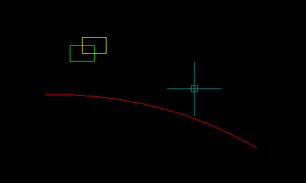

Align Objects to Curve
This page is delivered for consistency purposes only, as part of the LeeMac sample module of DynALisp, which shows how DynALisp turns existing AutoLISP programs into a module. The program and its description are the work of Lee Mac, who keeps all the credit for them. The original page, with the latest version, is on Lee Mac's website: https://lee-mac.com/objectalign.html
| Function Syntax | LM-ObjectAlign – original syntax: OA (see aliases) |
| Current Version | 1.7 |
| Compatible with AutoCAD for Mac? | No |
| Compatible with AutoCAD LT? | Yes |
| Original Page | lee-mac.com/objectalign.html |
Program Description
This program will enable the user to dynamically align a selection of objects to a selected curve, with intuitive placement controls.
Upon starting the program with the command syntax OA, the user is prompted to make a selection of objects to be aligned. Following a valid selection, the user is prompted to specify a base point to use during alignment; at this prompt, the program will use the center of the bounding box of the selection of objects by default.
The user is then prompted to select a curve object (this may be a Line, Polyline, Arc, Circle, Ellipse, XLine, Spline etc.) to which the selection of objects are to be aligned. The selected curve may be a primary object, or an object nested with a Block or XRef, nested to any level.
After selection, the program offers several controls to aid with object placement displayed at the command line:
[+/-] for [O]ffset | [</>] for [R]otation | [M]ultiple | <[E]xit>:
The offset of the objects from the curve may be controlled incrementally by a tenth of the object height using the + / - keys, or a specific offset may be entered upon pressing the O key.
The set of objects may be rotated anti-clockwise or clockwise by 45 degrees relative to the curve by pressing the < or > keys respectively; alternatively, the user may enter a specific rotation by pressing the R key.
The user may toggle 'Multiple Mode' by pressing the M key; with this mode enabled, the user may continuously align multiple copies of the selected objects to the selected curve.
Finally, the user may place the objects by left-clicking the mouse, or may exit the program by right-clicking the mouse, pressing Enter or Space, or by pressing the E key to invoke the Exit option.
The program should perform successfully in all UCS & Views, and in all versions of AutoCAD that have Visual LISP functions available (AutoCAD 2000 onwards).
Program Preview

Bundled program notes
;;--------------------------=={ Object Align }==------------------------;;
;; ;;
;; This program will enable the user to dynamically align a selection ;;
;; of objects to a selected curve, with intuitive placement controls. ;;
;; ;;
;; Upon starting the program with the command syntax 'OA', the user is ;;
;; prompted to make a selection of objects to be aligned. Following a ;;
;; valid selection, the user is prompted to specify a base point to ;;
;; use during alignment; at this prompt, the program will use the ;;
;; center of the bounding box of the selection of objects by default. ;;
;; ;;
;; The user is then prompted to select a curve object (this may be a ;;
;; Line, Polyline, Arc, Circle, Ellipse, XLine, Spline etc.) to which ;;
;; the objects are to be aligned. The selected curve may be a primary ;;
;; object, or nested with a Block or XRef to any level. After ;;
;; selection, the program offers several controls to aid with object ;;
;; placement displayed at the command line: ;;
;; ;;
;; [+/-] for [O]ffset | [</>] for [R]otation | [M]ultiple | <[E]xit>: ;;
;; ;;
;; The offset of the objects from the curve may be controlled ;;
;; incrementally by a tenth of the object height using the '+' / '-' ;;
;; keys, or a specific offset may be entered upon pressing the 'O' or ;;
;; 'o' key. ;;
;; ;;
;; The set of objects may be rotated anti-clockwise or clockwise by ;;
;; 45 degrees relative to the curve by pressing the '<' or '>' keys ;;
;; respectively; alternatively, the user may enter a specific rotation ;;
;; by pressing the 'R' or 'r' key. ;;
;; ;;
;; The user may toggle 'Multiple mode' by pressing the 'M' or 'm' key; ;;
;; when enabled, the user may continuously align multiple copies of ;;
;; the selected objects to the selected curve. ;;
;; ;;
;; Finally, the user may place the objects and exit the program by ;;
;; either clicking the left or right mouse buttons, pressing Enter or ;;
;; Space, or by pressing the 'E' or 'e' keys. ;;
;; ;;
;; The program should perform successfully in all UCS & Views, and in ;;
;; all versions of AutoCAD that have Visual LISP functions available ;;
;; (AutoCAD 2000 onwards running on a Windows OS). ;;
;; ;;
;;----------------------------------------------------------------------;;
;; Author: Lee Mac, Copyright © 2010 - www.lee-mac.com ;;
;;----------------------------------------------------------------------;;
;; Version 1.0 - 2010-05-01 ;;
;; ;;
;; - First release. ;;
;;----------------------------------------------------------------------;;
;; Version 1.1 - 2011-05-07 ;;
;;----------------------------------------------------------------------;;
;; Version 1.2 - 2012-12-11 ;;
;;----------------------------------------------------------------------;;
;; Version 1.3 - 2012-12-14 ;;
;;----------------------------------------------------------------------;;
;; Version 1.4 - 2018-05-06 ;;
;; ;;
;; - Program modified to enable compatibility with all UCS & Views. ;;
;;----------------------------------------------------------------------;;
;; Version 1.5 - 2019-08-09 ;;
;; ;;
;; - Added 'Multiple' mode to allow the user to align multiple copies ;;
;; of the selected objects. ;;
;;----------------------------------------------------------------------;;
;; Version 1.6 - 2020-12-15 ;;
;; ;;
;; - Fixed bug causing divide by zero error when specifying the offset ;;
;; for an object with zero height. ;;
;;----------------------------------------------------------------------;;
;; Version 1.7 - 2020-12-22 ;;
;; ;;
;; - Modified program to remove the final set of objects if the user ;;
;; exits the alignment using ENTER, SPACE, right-click, or Exit. ;;
;;----------------------------------------------------------------------;;
Command Names And Aliases
As in every DynALisp module, each program of this sample module has one main command, named LM-*, and the original command names of Lee Mac's page are kept as its aliases: they run the same command, and can be added, renamed or removed in Dyl-Suite (saved in Resources\Aliases.csv).
| Command | Aliases | Name |
|---|---|---|
| LM-ObjectAlign | OA | Object Align |